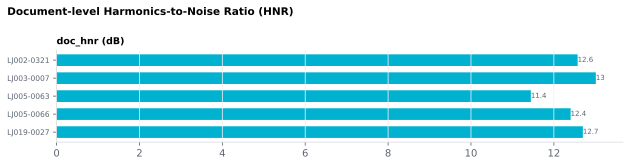

On this page
6.2.11Document-level Harmonics-to-Noise Ratio (HNR)
Mean Harmonics-to-Noise Ratio, in dB, across all voiced frames in the audio.
6.2.11.1What it is
Mean Harmonics-to-Noise Ratio, in dB, across all voiced frames in
the audio. HNR measures how much of the signal energy is periodic
(harmonics: glottal-pulse-driven) versus aperiodic (noise: breath,
turbulence). Reference values come from sustained vowels: a healthy
speaker's sustained [a] or [i] is around 20 dB and an [u] around 40 dB,
while hoarse voices give an [a] much lower than 20 dB (Boersma 2003).
doc_hnr is measured over running speech instead, so those vowel
figures are not a threshold for it; compare it between stimuli. Observed
on our 10-stimulus validation corpus: doc_hnr 8.97–13.01 dB.
A single value per stimulus.
6.2.11.2See it

6.2.11.3In your output
| stimulus_id | doc_hnr dB |
|---|---|
| LJ002-0321 | 12.57 |
| LJ003-0007 | 13.01 |
| LJ005-0063 | 11.44 |
| LJ005-0066 | 12.4 |
| LJ019-0027 | 12.7 |
6.2.11.4MATLAB
% Load the document-level table (one row per stimulus)
T = readtable('document/documents_summary_<timestamp>.csv', 'TextType', 'string');
T.Properties.VariableNames % every column in the file
head(T(:, {'stimulus_id', 'doc_hnr'}), 10) % this feature's columns (first rows)
% Plot
barh(T.doc_hnr); yticks(1:height(T)); yticklabels(T.stimulus_id); xlabel('doc_hnr')
6.2.11.5How it's computed
HNR is estimated by Praat as
HNR(dB) = 10 · log₁₀(periodic_energy / aperiodic_energy)
using the autocorrelation peak relative to the rest of the autocorrelation function (Boersma 1993). Unvoiced frames return −200 dB (Praat's sentinel for "no harmonic content"); those frames are excluded from the mean.
6.2.11.6In the code
Computed in sensi/extractors/prosody.py:compute_doc_prosody (called from
sensi/pipeline.py's document-batch finishing step) from the same Contours
object used by the other prosody columns. Per-frame HNR
values come from Praat's To Harmonicity (cc) call; the mean
excludes Praat's unvoiced sentinel (−200 dB).
Why the exclusion matters follows from the arithmetic of a mean: with
n voiced frames averaging h dB and k unvoiced frames at −200 dB, the
mean is (n·h − 200·k) / (n + k). For typical speech HNR (≈ 10–20 dB),
just 10 % unvoiced frames (k = n/9) drags the mean down by about 20 dB, so
including the sentinel would make doc_hnr mostly a measure of how much
silence the recording has. Excluding it keeps the value about voiced speech.
6.2.11.7Library
import parselmouth
snd = parselmouth.Sound("stimulus.wav")
harmonicity = snd.to_harmonicity()
hnr_per_frame = harmonicity.values[0]
hnr_mean = hnr_per_frame[hnr_per_frame > -100].mean() # mask unvoiced sentinels
6.2.11.8EEG rationale
HNR is a standard acoustic measure of voice quality — the periodic/aperiodic energy ratio in the speech signal, indexing modal vs. breathy vs. creaky phonation. It is used in clinical voice assessment as an instrumental measure of vocal function (Patel 2018) and in research on the acoustic correlates of vocal emotion expression (Banse 1996).
At the stimulus level, doc_hnr is useful as a stimulus-matching
covariate: when comparing recordings made under different conditions
or by different speakers, equalizing or regressing out HNR controls
for gross voice-quality differences in the audio. ⚠️ Whether such
voice-quality differences translate into measurable ERP confounds in
a given paradigm depends on the design; the citations above establish
HNR's role as an acoustic / clinical measure, not specifically as an
EEG confound.
6.2.11.9Papers
- Boersma 1993 Boersma. Accurate short-term analysis of the fundamental frequency and the harmonics-to-noise ratio of a sampled sound. IFA Proceedings. PDF — the HNR algorithm Praat uses.
- Boersma 2003 Boersma. Harmonicity (Praat manual page, rev. 2003-06-10). fon.hum.uva.nl/praat/manual/Harmonicity.html — a healthy speaker's sustained [a] or [i] is around 20 dB, [u] around 40 dB; hoarse voices much lower than 20 dB for [a].
- Banse 1996 Banse & Scherer. Acoustic profiles in vocal emotion expression. J. Personality and Social Psychology. doi:10.1037/0022-3514.70.3.614
- Patel 2018 Patel, Awan, Barkmeier-Kraemer, et al. Recommended protocols for instrumental assessment of voice. American J. Speech-Language Pathology. doi:10.1044/2018_AJSLP-17-0009